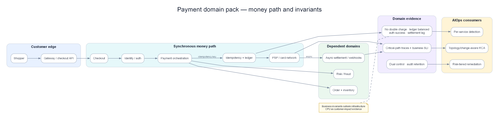

Chapter 16 — AIOps for E-commerce, Banking & Fintech¶
This chapter applies the full AIOps stack (observability → anomaly → correlation → RCA → remediation) to domains with real-money constraints: e-commerce peak traffic, core banking / payment rails, and fintech-style PSPs. Unlike pure SaaS, a wrong automated decision can double-charge customers, oversell inventory, or violate the audit trail. Core mindset: reliability engineering for money paths, not only for HTTP 200.
Prerequisites¶
- 00 — Introduction to AIOps — philosophy, maturity levels, error budget thinking
- 01 — Observability — SLI/SLO, RED/USE, cardinality
- 09 — Anomaly Detection — seasonal baselines, false positives
- 10 — Alert Correlation — topology correlation, alert storms
- 13 — Remediation — safety gate, blast radius, audit
- 14 — Production Operations — DR, cost, security hardening
Related Documents¶
- 02 — OpenTelemetry — trace critical payment path
- 03 — Prometheus — business SLI, recording rules
- 04 — Loki — log redaction, controlled retention
- 05 — Tempo — latency budget on authorization path
- 07 — Kafka — cart/payment event pipeline, outbox, exactly-once effect
- 11 — Root Cause Analysis — payment rails dependency graph
- 12 — LLM Agent — investigation with compliance guardrails
- 15 — BigTech AIOps Patterns — scale patterns for reference
Next Reading¶
After this chapter, continue to 17 — Famous Incidents to drill public incidents through a money-path lens. You may return to 14 — Production or 13 — Remediation to tighten the safety matrix.
How to read this chapter (concept-first)¶
Concepts first — code second
From chapter 09 onward, prefer: problem → idea → input data → algorithm/model → output → pros/cons → when to use. Implementation lives under See the code below (click to expand). Goal: understand why it works on AIOps telemetry, not only copy-paste snippets.
| Step | Question |
|---|---|
| 1. Problem | What pain does this solve (noise, cascade, MTTR…)? |
| 2. Idea | 2–3 sentence intuition, no formulas |
| 3. Data in | Which metrics/logs/traces/events, windows, features? |
| 4. Algorithm | Computation steps / model flow |
| 5. Output | Event schema, score, rank, action proposal? |
| 6. Trade-offs | Pros / cons / cost / explainability |
| 7. When | When to use — and when not to |
1. Different domain constraints¶

Poster: shopper → checkout → risk → PSP → issuer, with RED + business SLIs + money-path traces.
KEY IDEA
AIOps is not “one size fits all.” The same correlation/RCA pipeline exists, but domain constraints decide: which SLIs are hard, which remediations are forbidden, which baselines must be calendar-aware, and how long audit trails must be kept. E-commerce absorbs peak; banking absorbs always-on + compliance; pure SaaS absorbs tenant isolation. Wrong domain constraints = wrong safety-gate design.
Why start with a constraint table?
Before copying Netflix/Google patterns, ask: “How does this money path fail, and who gets punished?” A safe pod-scale pattern in SaaS can be unsafe in banking if the action touches a risk rule engine.
1.1 Core constraint comparison table¶
| Constraint | E-commerce | Banking / Core Payment | Pure SaaS |
|---|---|---|---|
| Availability shape | Peak events (BFCM, 11.11, Lunar New Year, flash sale) | Always-on 24/7, including holidays | Biased to business hours |
| Consistency | Eventual OK for catalog, search, recommendation | Strong for ledger, balance, postings | Depends (often eventual for analytics) |
| Compliance | PCI-DSS partial (if touching PAN), PDPA/GDPR | PCI-DSS, Basel, central-bank circulars, SOC2, audit | SOC2, sometimes ISO 27001 |
| Critical blast radius | Cart, checkout, inventory, payment | Payment rails, core banking, settlement | Tenant isolation, noisy neighbor |
| Cost of false positive auto-action | Lost GMV, bad UX | Regulatory finding, wrong money movement | Churn, SLA credit |
| Change velocity | High (campaign, pricing, A/B) | Low, change windows, four-eyes | Medium–high |
| Human in the loop | Common for money reverse | Mandatory for most money actions | Optional by risk |
| Data residency | Market-dependent | Often hard (onshore / approved region) | Contract-dependent |
| DR objective | Short RTO for storefront; looser RPO for catalog | Very tight RTO/RPO for ledger | By customer tier |
1.2 Availability: peak vs always-on vs business-hours¶
graph LR
subgraph EC["E-commerce traffic"]
E1[Weekday baseline]
E2[Campaign ramp]
E3[Peak spike 10–50x]
E4[Cooldown + returns]
E1 --> E2 --> E3 --> E4
end
subgraph BK["Banking traffic"]
B1[Intraday auth steady]
B2[Batch windows night]
B3[Morning open surge]
B4[Holiday calendar shift]
B1 --> B2 --> B3 --> B4
end
subgraph SA["Pure SaaS"]
S1[Business hours peak]
S2[Night quiet]
S3[Month-end reporting]
S1 --> S2 --> S3
endAIOps consequences:
| Domain | Baseline model | Error budget mindset |
|---|---|---|
| E-commerce | Seasonal + campaign calendar | “Burning budget fast in a 4-hour peak can still be OK if GMV holds” |
| Banking | Intraday + holiday + batch schedule | “No ‘peak exception’ for the authorization path” |
| Pure SaaS | Weekly seasonality | “Off-hours downtime is cheaper, but enterprise SLA still tightens” |
Do not train anomaly models on a “flat year” and then use them for BFCM.
The model will treat legitimate traffic as anomaly → page on-call → on-call ignores → when a real incident hits during peak, the signal is already dead. See 09 — Anomaly Detection.
1.3 Consistency: eventual catalog vs strong ledger¶
- Catalog / search / PDP: 30–120s stale is often acceptable; AIOps prioritizes availability and cache resilience.
- Inventory reservation: needs business-level correctness (no oversell), even if the backend uses reservation TTL + compensation.
- Payment authorization & ledger postings: need strong consistency / carefully designed sagas. “Eventual” is not an excuse to double-post.
Warning
Edge case: Showing “in stock” (eventual inventory) while reservations are exhausted → flash sale oversell. This is not only a UX bug; it creates refund + support + payment reverse storms — a real-money incident.
1.4 Compliance surface¶
| Control area | E-commerce | Banking | AIOps implication |
|---|---|---|---|
| Card data (PAN) | Tokenization / PSP-hosted fields | Often strict PCI scope | Mandatory log redaction; no AI ingest of raw PAN |
| Dual control | Rare | Frequent (four-eyes) | Auto-remediation blocked by policy |
| Audit trail | Business analytics + security | Regulatory evidence | Every auto action needs immutable log |
| Data retention | Cost-driven | Regulator-driven (often longer) | Observability cost rises; different sampling strategy |
| Cross-border log transfer | More flexible | Restricted | Multi-region + residency architecture |
1.5 Blast radius mental model¶
flowchart TD
A[Incident class] --> B{Money path?}
B -->|No| C[Infra / UX path]
B -->|Yes| D[Financial path]
C --> E[Scale / restart / cache OK]
D --> F{Reversible?}
F -->|Yes soft| G[Circuit break / failover PSP]
F -->|No or hard reverse| H[Human approval + dual control]
G --> I[Full audit + post-check]
H --> IPrincipal SRE rule: map every alert class into one of four blast-radius buckets before attaching remediation:
- Read-only / UX — safe to auto
- Capacity / traffic shaping — auto with guardrails
- Money movement adjacent (circuit, routing) — conditional auto
- Money movement / risk / account state — human-only
1.6 Checklist: domain intake before “turning on AIOps”¶
- [ ] Which money paths are absolute P0 (auth, capture, settle, refund, transfer)?
- [ ] Is the next 12-month peak calendar encoded?
- [ ] Has the compliance owner signed the remediation whitelist?
- [ ] Do logs/metrics touch PAN/PII — where is redaction?
- [ ] Are reconciliation signals in observability, or only in finance ops?
- [ ] Does error budget policy separate “storefront” vs “payment rails”?
2. E-commerce reliability patterns¶
KEY IDEA
E-commerce reliability is not “homepage uptime.” Customers can tolerate a homepage that is 1 second slow; they cannot tolerate checkout fail or payment success with a lost order. AIOps must prioritize the pipeline: Cart → Inventory → Payment → Fulfillment, and understand traffic shape by campaign.
2.1 Traffic shape: BFCM / 11.11 / Lunar New Year¶
Typical traffic shape (relative):
Normal weekday: ████
Promo weekend: ████████
11.11 ramp-up: ████████████████
Flash sale open: ████████████████████████████ (spike 1–5 minutes)
Post-peak plateau: ██████████████
Returns week: ██████████ (different profile: more read + refund API)
Operational characteristics:
| Phase | Dominant risk | AIOps focus |
|---|---|---|
| Ramp-up | Capacity under-estimate | Predictive scale, cache warm |
| Open spike | Thundering herd, stampede | Queue shedding, admission control |
| Plateau | Dependency saturation (PSP, DB) | Dependency SLO, circuit breakers |
| Cooldown | Webhook retry storms, reconciliation lag | Backoff policy, DLQ observability |
| Returns | Refund path, inventory restock races | Separate business SLIs for reverse flows |
Why seasonal baselines matter more than static thresholds?
Threshold checkout_error_rate > 2% may be right on a normal day but wrong during a flash sale if the denominator (attempts) rises 20× and some errors are client abandon. Conversely, 0.8% error rate can be catastrophic if absolute failed payments equal billions of GMV.
2.2 Shopify-style lessons / resilient payment thinking¶
Recurring themes in public engineering blogs of large commerce platforms (do not copy code — copy decisions):
| Pattern | Why it exists | AIOps hook |
|---|---|---|
| Idempotency keys | Client retry + network blip does not double-charge | Metric: duplicate_key_reuse_rate, alert on abnormal spike |
| Timeout budgets | Edge must not wait forever and storm connections | Trace: budget remaining per hop |
| Retries with jitter | Avoid sync retry storms into PSP | Correlate retry_count with PSP latency |
| Circuit breakers | Fail fast when dependency is dead | Breaker state change = first-class event |
| Bulkheads | Cart browse must not die because payment pool is empty | Pool saturation per bulkhead |
| Graceful degradation | Suggest COD / secondary method when primary PSP is bad | Business SLI: “successful checkout by method” |
Idempotency is business correctness, not only HTTP hygiene.
At-least-once delivery (Kafka, webhooks, mobile retry) is the default. Exactly-once business effect must be designed at the application layer. See 07 — Kafka.
Timeout budget & circuit breaker (decision summary)¶
| Decision | Why |
|---|---|
| PSP timeout < client timeout | Avoid ghosts: client gives up, server still auths |
| ≤1 server retry + jitter; do not retry hard declines | Avoid storms + issuer spam |
| Breaker OPEN/HALF_OPEN is a first-class event | Correlation/RCA needs state, not only delayed latency |
| Export breaker transitions → bus/metrics | 07 Kafka, 10 Correlation |
Design budgets backward from the client (e.g. client 8s → server ~7.5s → leave room for risk + 1 retry), not by summing bottom-up timeouts by gut feel. Support with traces: 05 — Tempo.
2.3 Pipeline SLIs: cart → inventory → payment → fulfillment¶
flowchart LR
A[Browse/PDP] --> B[Add to Cart]
B --> C[Reserve Inventory]
C --> D[Checkout Session]
D --> E[Risk / Fraud]
E --> F[Payment Auth]
F --> G[Capture / Confirm]
G --> H[Order Create]
H --> I[Fulfillment / WMS]
I --> J[Ship / Track]| Stage | Suggested SLI | SLO orientation | Edge notes |
|---|---|---|---|
| Cart add | Success rate, p95 latency | Looser than checkout | Cache miss stampede |
| Inventory reserve | Reserve success, conflict rate | Tight during flash sale | Oversell vs under-sell tradeoff |
| Checkout start | Session create success | Medium | Config/campaign flag bugs |
| Payment auth | Auth success, auth latency | Very tight | PSP partial outage |
| Order create | Post-payment order persist | Zero tolerance money-success/order-fail | Dual-write failure |
| Fulfillment accept | Ack rate, lag | Business-day sensitive | Warehouse cut-off |
| Refund | Refund success, time-to-refund | Compliance + CX | Reverse path often lacks SLIs |
2.4 Real-world e-commerce edge cases¶
Edge A — Flash sale thundering herd¶
Symptoms: QPS rises 30× in 30 seconds; CPU OK but checkout p99 explodes from inventory lock / DB.
Common mistake: Scale pods by CPU → too late / wrong layer (web scales, DB does not).
Right direction:
- Admission control at the edge (queue, lottery, waiting room)
- Pre-warm cache + connection pools
- Inventory reservation designed to avoid hot-key single SKU
- AIOps: anomaly on queue depth + reserve conflict, not only CPU
Edge B — Cache stampede¶
Symptoms: TTLs expire together on hot keys (campaign landing), origin overload.
Why AIOps often misses: Latency rises “evenly” across many services → correlation sees fan-out but RCA blames an unrelated deployment.
Observable mitigations: single-flight / soft-TTL / request coalescing metrics.
Edge C — Inventory oversell¶
Symptoms: Orders > stock; then cancel/refund storm.
Common root causes:
- Read replica lag used for stock check
- Reservation TTL too long + double reservation
- Compensation saga fails silently
- Multi-warehouse merge logic race
AIOps signal: orders_created - reservations_committed drift; do not wait for end-of-day finance. Also watch reservation_leak (active reservations ≫ open checkouts) — often broken TTL/abandon, virtual stock held hostage.
Edge D — Webhook retry storms¶
Symptoms: PSP/shipping webhook endpoint 5xx → partner exponential retries → self-DoS.
Mitigations:
- Endpoint always acks fast, processes async
- Idempotent consumer
- Observe
webhook_inflight,retry_attempt_histogram, DLQ age
Webhook storms often appear after you “fixed” the primary incident.
On-call celebrates payment auth green again — 20 minutes later the API gateway dies under retry backlog. Correlation must treat “recovery phase” as its own phase.
2.5 AIOps for e-commerce: seasonal baselines¶
| Model input | Required? | Reason |
|---|---|---|
| Hour-of-day / day-of-week | Yes | Shopping has rhythm |
| Campaign calendar (11.11, BFCM, Lunar New Year) | Yes | Legitimate peak |
| Marketing push notifications | Recommended | Micro-spikes |
| Payment method mix | Recommended | COD vs card vs wallet |
| Region/storefront | Yes if multi-market | VN Lunar New Year ≠ US Cyber Monday |
Principle: separate anomaly classes:
- Infra health anomalies (CPU, GC, pod restarts)
- Traffic shape anomalies (QPS vs campaign forecast)
- Business KPI anomalies (conversion, AOV, auth rate)
- Money integrity anomalies (paid-but-no-order, oversell drift)
Only class (1) and part of (2) should page on-call at 3 a.m. Classes (3)/(4) need different routing (commerce ops / risk / finance tech).
2.6 E-commerce readiness checklist¶
- [ ] Campaign calendar feeds the anomaly service
- [ ] Checkout & payment SLIs separated from homepage SLIs
- [ ] Waiting room / admission control metrics visible
- [ ] Inventory conflict & oversell drift dashboards
- [ ] Webhook DLQ age + retry histogram
- [ ] Post-payment order create guaranteed observability (the “money-success/order-fail” killer)
- [ ] Load test profile matches flash sale, not only steady ramp
- [ ] Timeout budget documented per hop; breaker events as telemetry
- [ ] Post-peak returns/refund dashboard
2.7 Common e-commerce anti-patterns¶
| Anti-pattern | Fix direction |
|---|---|
| Only monitor homepage / scale by CPU only | Funnel SLI + scale by queue/lag |
| One global error rate / suppress all alerts during sale | Slice by method/PSP; integrity-first in campaigns |
| Infinite mobile retry / shared browse+pay pool | Budget+jitter; bulkhead |
| Cache stock = source of truth | Reservation service is truth |
Warning
Gross GMV at peak ≠ reliability success if oversell + refund + chargeback after 48h eat the margin. Measure net GMV after reverse flows.
3. Banking & core payment systems¶
KEY IDEA
Banking AIOps operates in a world of dual control, change windows, and audit. Authorization latency measured in milliseconds has business meaning (authorization timeout = declined = lost interchange / bad CX). Reconciliation is not a month-end accounting report — it is a real-time operational signal.
3.1 Dual control, change windows, four-eyes¶
| Control | Operational meaning | AIOps impact |
|---|---|---|
| Four-eyes | Two people approve sensitive change | Auto-remediation must not bypass |
| Change window | Deploy/core change only in allowed hours | Models must know “freeze period” |
| Segregation of duties | Dev ≠ prod break-glass ≠ audit | LLM agent must not both propose and execute money actions |
| Maker-checker | Create vs approve separated | Runbook automation needs human checkpoint state machine |
“Automation” in banking ≠ “remove people.” It = shorten detect + enrich + propose, while keeping approval in the right place.
See the safety framework in 13 — Remediation.
3.2 Latency budgets on the authorization path¶
sequenceDiagram
participant POS as POS / App
participant GW as API Gateway
participant RISK as Risk Engine
participant SW as Switch / Processor
participant NET as Card Network / Napas
participant ISS as Issuer
POS->>GW: Auth request
GW->>RISK: Score
RISK-->>GW: Allow/Review/Deny
GW->>SW: Route
SW->>NET: ISO8583 / equiv
NET->>ISS: Auth
ISS-->>NET: 00/05/...
NET-->>SW: Response
SW-->>GW: Response
GW-->>POS: Approve/DeclineWhy ms matter:
- Client timeouts (POS/mobile) are often 2–10s end-to-end
- Each hop that is “too safe” (retry + long timeout) consumes budget and raises duplicate auth risk
- p99 is worse than mean: AIOps must watch tail latency, not only average
| Hop | Suggested budget (illustrative) | Signal |
|---|---|---|
| Edge → API | 50–100ms | gateway latency |
| Risk | 50–150ms | model timeout rate |
| Switch → network | 100–400ms | external dependency SLO |
| Issuer | variable | decline code mix |
| Total | < client timeout − safety margin | e2e auth SLI |
Set timeouts backward from client budget; do not sum upward by gut feel.
Bottom-up summing often exceeds the real timeout → retry storm + ghost transactions.
Decline codes as operational signal¶
Do not only count HTTP errors. Group approve / soft-decline / hard-decline / issuer-unavailable / fraud / format-error; owners differ (payments vs risk vs eng). AIOps: anomaly on code mix shift over 1–5 minute windows, not only volume.
3.3 Reconciliation as first-class observability¶
Operational definition: match “truths” from multiple ledgers:
- Internal ledger
- PSP / card network reports
- Bank settlement files
- Wallet top-up / cash movement
| Signal | Meaning | Suggested severity |
|---|---|---|
| Unmatched auth | Auth without post/ledger | P1 if rising |
| Unmatched capture | Capture without corresponding auth | P1 |
| Settlement lag > SLA | File/batch late | P2→P1 near cut-off |
| Amount mismatch | Wrong amount | P1 immediate |
| Ghost transaction | One side has it, the other does not | P1 + finance bridge |
If recon only runs as a 02:00 batch and tech never sees metrics, you are blind 22 hours a day.
Put recon counters/lag into Prometheus/Grafana like any other SLI (03 — Prometheus).
3.4 Banking/payment edge cases¶
Partial settlement¶
Some transactions settle, some stay pending — “success rate” dashboard stays green while cash flow drifts.
AIOps needs: state machine metrics by lifecycle (auth → clear → settle → reconcile), not only binary success.
Ghost transactions¶
Client times out; issuer already approved; merchant retry creates a second auth or a reverse that does not match.
Observable mitigations:
- End-to-end correlation id
- Idempotency at the switch
- Explicit reverse/void workflows with SLIs
Clock skew & leap second¶
Comparing timestamps across core, switch, network file: clock skew → false recon mismatch; leap second/batch window is rare but has already broken job schedulers.
Checklist: NTP health is a money-system dependency, not an “infra nice-to-have.”
Holiday calendars¶
T+1/T+2 shifts with holidays; central-bank/weekend/regional holidays make “normal lag” look like anomaly.
Model: calendar-aware baselines are mandatory (section 6).
3.5 Regulatory audit trail for automated remediation¶
Every auto action that touches production banking must answer:
- Who/what decided? (rule id, model version, approver)
- Based on which signals? (alert ids, metrics snapshot)
- What was done? (API call, change ticket, breaker open)
- Result? (success/fail, before/after)
- Was there rollback? (who pressed, when)
- Kept how long? (retention policy per circular/internal policy)
LLM propose must not be the sole source of truth in audit.
Store controlled prompt/response + structured decision fields. See 12 — LLM Agent.
3.6 Banking AIOps checklist¶
- [ ] Authorization e2e latency SLO split by channel (ATM/POS/ecom/QR)
- [ ] Decline code mix dashboard (issuer vs acquirer vs risk)
- [ ] Recon lag & mismatch metrics real-time/near-real-time
- [ ] Change freeze calendar integrated
- [ ] Dual-control enforced in remediation engine
- [ ] NTP / time sync alerts treated as P2+ for money zones
- [ ] Immutable audit store for auto actions
- [ ] Decline code mix + ghost transaction playbook
- [ ] NTP alerts mapped to money-zone severity
3.7 Zone-aware policy & runbook skeleton¶
Split policy by zone: core/ledger (very limited auto), switch/middleware (topology correlation), digital API (scale/canary), network edges (synthetics + partner SLO). One “global” remediation catalog is an anti-pattern.
Auth degradation runbook (short): confirm segmented SLI → dependency (risk/switch/network/issuer) → change freeze? → impact → external bridge or scale/shed by policy → no auto reverse → audit even the decision to “do nothing.”
4. Fintech / payment processors¶
KEY IDEA
“Stripe-class” thinking: beautiful APIs, first-class idempotency, public failure modes, multi-tenant isolation, and marketing uptime must be checked against real error budget. Fintech sits between merchant and bank — you are both someone else’s dependency and dependent on the network behind you.
4.1 Idempotency keys & exactly-once business effect¶
Common delivery guarantee:
Network / queue / webhook = at-least-once
Business requirement:
Charge customer once, credit merchant once
Solution:
Idempotency key + durable request log + state machine
→ “exactly-once effect” even when delivery repeats
| Component | Decision | Why |
|---|---|---|
| Key scope | per-merchant + key | Avoid cross-tenant collision |
| Key TTL | 24h–72h+ by product | Matches real client retry windows |
| Response replay | Return original response on key reuse | Client needs deterministic behavior |
| Concurrent same key | Lock / first-writer-wins | Mobile double-submit race |
AIOps metrics:
idempotency_replay_totalidempotency_conflict_totalin_flight_duplicate_window
A conflict spike can be a client bug — or attack/misconfiguration.
4.2 Uptime marketing vs error budget reality¶
| Marketing claim | Error budget reality |
|---|---|
| “99.99% API uptime” | ~4.3 minutes downtime/month |
| “Global availability” | May exclude maintenance / regional degradation |
| “Successful payments” | Definition of success (2xx? approved? captured?) must be explicit |
Internal SRE must not be managed by marketing slides.
Manage by customer-perceived SLIs: authorize success, payout success, webhook delivery success, dashboard query success — each with its own error budget.
4.3 Multi-PSP failover & smart routing¶
flowchart TD
REQ[Payment request] --> R{Router}
R -->|Primary healthy| P1[PSP A]
R -->|Error budget burn / latency| P2[PSP B]
R -->|BIN / geography rules| P3[PSP C]
P1 --> OUT[Normalized response]
P2 --> OUT
P3 --> OUT
OUT --> OBS[SLI by PSP + method + region]Routing decisions based on:
- Real-time success rate per PSP
- p95/p99 latency
- Cost (MDR) — careful: cost optimization must not kill success
- Hard constraints (BIN, currency, 3DS capability)
- Circuit state
Failing over 100% of traffic the moment primary “looks bad” can take secondary down with it.
Use canary failover (5%→25%→50%→100%) + watch secondary saturation. Pattern matches canary remediation in 13 — Remediation.
4.4 Edge: partial outage by BIN/region/method¶
Card networks / PSPs rarely go “cleanly down.” Reality:
- Visa OK, one acquirer path bad
- QR OK, international cards bad
- 3DS provider slow → e-com auth drops, POS still good
Observability consequence: intentional high-cardinality dimensions: psp, method, bin_range_bucket, region, channel — but bucket carefully to avoid cost explosions (01 — Observability cardinality).
4.5 Fintech processor checklist¶
- [ ] Idempotency semantics documented + tested under concurrency
- [ ] SLIs split by PSP/method/region
- [ ] Smart routing shadow mode before auto
- [ ] Webhook delivery SLO + retry policy public/internal aligned
- [ ] Tenant isolation tested (noisy neighbor)
- [ ] Status page signals match internal SLIs (avoid “green lie”)
5. Observability design for transaction paths¶
KEY IDEA
Transaction path observability = RED for APIs plus business SLIs. Traces must connect app → risk → PSP → bank (to the extent you are allowed to see). Logs must be sufficient for audit without becoming a PAN/PII warehouse.
5.1 RED + business SLIs¶
| Layer | Metrics | Question answered |
|---|---|---|
| RED | Rate, Errors, Duration | Is the service healthy? |
| Business | Payment success, auth rate, conversion | Is money/business flow healthy? |
| Integrity | Recon mismatch, paid-no-order | Do the books match? |
| Dependency | PSP latency/error, DB pool | Are external deps taking us down? |
Minimum SLI set for money path:
payment_auth_success_ratiopayment_auth_latency_p99checkout_conversion_ratio(ecom)post_payment_order_persist_successrefund_success_ratio+refund_latencysettlement_lag_secondsrecon_unmatched_countwebhook_success_ratio
5.2 Trace critical path¶
flowchart LR
subgraph App
A1[Checkout API]
A2[Payment Service]
A3[Ledger Service]
end
subgraph Risk
R1[Fraud score]
end
subgraph External
E1[PSP]
E2[Bank / Network]
end
A1 --> A2 --> R1 --> A2 --> E1 --> E2
E2 --> E1 --> A2 --> A3Instrumentation decisions (WHY):
| Decision | Why |
|---|---|
Span events for state transitions (auth_requested, auth_approved) |
Logs may drop; span events stick to the right trace |
Attribute payment_id hashed / merchant_id |
Correlate while reducing PII |
| Propagate W3C tracecontext across message bus | Async capture/settle still joins (02 — OpenTelemetry, 05 — Tempo) |
| Do not trace full PAN | Compliance + cardinality |
5.3 Log redaction: PAN, PII, secrets¶
One log line containing PAN can expand PCI scope for the entire logging stack.
Redaction must be at source + collector; do not trust “devs will be careful.”
Redaction pipeline checklist:
- [ ] Application scrubbers (defense in depth)
- [ ] OTel Collector / Alloy processors drop/hash sensitive fields
- [ ] Loki pipelines reject known PAN patterns
- [ ] Separate access control for raw vs redacted
- [ ] Audit who queries payment log namespaces
- [ ] LLM training data must not use raw payment logs
5.4 Cardinality vs privacy vs useful dimensions¶
| Dimension | Useful? | Risk |
|---|---|---|
psp, method, region |
Very high | Low if enum |
merchant_id |
High (multi-tenant fintech) | Cardinality explosion |
Full bin |
Fraud/network debug | Privacy + cardinality |
bin_bucket (6–8 digit bucketed) |
Usually enough | Acceptable |
user_id |
CX debug | PII — avoid metric labels |
Rule: metric labels = low/medium cardinality enums; high-cardinality ids live in logs/traces with sampling.
5.5 Sampling strategy for money systems¶
| Signal | Suggested sampling | Reason |
|---|---|---|
| Metrics aggregates | Full (via metrics) | Cheap, need continuity |
| Success-path traces | Tail-based keep errors + slow | Cost |
| Auth-failure traces | Keep high / near full | Money debug |
| Money integrity anomaly traces | Always keep | Rare but critical |
| Info logs | Aggressive filter | Cost + privacy |
| Error/audit logs | Longer retention | Compliance |
5.6 Suggested dashboard topology¶
- Executive money health — success, GMV at risk, recon
- Checkout funnel — step conversion
- PSP dependency — per provider
- Risk engine — latency + deny rates
- Integrity — paid-no-order, oversell, unmatched
- Webhook/async — lag, DLQ
- Compliance/access — who queried sensitive data
Cross-link pillars: 01, 03, 04, 05.
5.7 Synthetics, exemplars & instrumentation review¶
Synthetics (1–5 minutes): cart, checkout session, payment test MID, webhook health; batch ETA probe in banking windows. Label traffic_type=synthetic. Do not fire real cards on production networks if that creates recon noise — use approved test MIDs.
Exemplars: auth burn rate → failed-sample trace_id → Tempo separates PSP timeout vs risk deny → attach to incident (03 + 05).
Pre-peak/audit checklist: P0 RED stable; business counters do not double-count retries; traces across async; no PAN/user_id labels; integrity dashboard has owner; synthetic/real filterable; alert → runbook link.
6. Domain-specific anomaly detection¶
KEY IDEA
In ecom/banking, an “anomaly” can be good fraud (blocked), good campaign (traffic up), or bad infra. If one model merges them all, you page the wrong team and people mute alerts. Separate models by layer.
6.1 Confusion matrix: fraud vs infra anomaly¶
| Reality \ Prediction | Infra anomaly | Fraud anomaly | Business spike | Benign |
|---|---|---|---|---|
| PSP degradation | Desired TP | FP (risk team) | FP | Dangerous FN |
| Card testing attack | FP (SRE) | TP | FP | FN |
| Flash sale | Classic FP | FP | Expected | — |
| Deploy bad config | TP | FP | FP | FN |
| Marketing push | Mild FP | — | Expected micro | — |
Routing matters as much as detection.
The same “auth decline spike” signal can be: issuer down (SRE/payments), fraud rule (risk), or campaign traffic mix shift (commerce). Correlation enrichment must carry campaign/risk context.
6.2 Calendar-aware & campaign-aware baselines¶
Mandatory inputs for ecom/bank models:
baseline_features = {
hour, dow, month,
is_public_holiday,
is_bank_holiday,
is_campaign_day,
campaign_id_bucket,
days_to_salary_like_cycle, # optional local patterns
batch_window_flag, # banking
change_freeze_flag
}
| Technique | When | Trade-off |
|---|---|---|
| STL / seasonal ESD | Stable weekly rhythm | Weak on one-off events |
| Prophet-like / regression with regressors | Calendar regressors available | Operationally complex |
| Separate models per “regime” | Peak vs normal | Needs regime detector |
| Suppression windows | Known campaigns | Dangerous if suppress too wide |
Suppression ≠ blindness.
During BFCM, do not turn anomaly off; change thresholds / target metrics (e.g. from QPS anomaly to auth_success and paid-no-order).
6.3 Separate models: infra health vs business KPI¶
graph TB
subgraph Infra["Infra models"]
I1[CPU/Mem/GC]
I2[Pod restarts]
I3[Dependency latency]
end
subgraph Biz["Business models"]
B1[Conversion]
B2[Auth success]
B3[AOV / GMV]
end
subgraph Integrity["Integrity models"]
G1[Recon mismatch]
G2[Paid-no-order]
G3[Oversell drift]
end
subgraph Fraud["Fraud models - own pipeline"]
F1[Velocity]
F2[Card testing]
end
Infra --> CE[Correlation Engine]
Biz --> CE
Integrity --> CE
Fraud --> RiskOps
CE --> IncidentWhy separate:
- Different training data
- Different owners
- Different false positive cost
- Different action playbooks
Algorithm reference: 09 — Anomaly Detection.
6.4 Edge: “good anomaly”¶
Examples:
- Auth deny rises because of a new fraud rule — correct
- Traffic rises because of KOLs — correct
- Latency rises slightly because 3DS step-up is enabled — security trade-off
AIOps must ingest change events (rule deploy, campaign start, feature flag) as covariates; otherwise every change becomes an incident.
6.5 Anomaly checklist for money domains¶
- [ ] Campaign/holiday feed automated
- [ ] Separate alert channels: SRE / Payments / Risk / Commerce
- [ ] BFCM playbook: metrics priority list
- [ ] Model performance reviewed post-peak (precision/recall)
- [ ] Integrity anomalies never “priority low”
- [ ] Fraud pipeline does not share auto-remediation with infra without a gate
- [ ] Change events ingested as covariates; post-peak model review
6.6 False positive economics & regime detector¶
Optimize precision for infra pages at night; keep high recall for integrity & auth. One global “sensitivity knob” usually both spams and misses.
Regime before detector: NORMAL | CAMPAIGN (integrity-first) | INCIDENT (suppress children) | BATCH_WINDOW | FREEZE. Wrong regime → wrong downstream pipeline — investing in regime labels often has higher ROI than adding another LSTM.
7. Alert correlation in checkout storms¶
KEY IDEA
One PSP timeout can make 50–500 services scream. Without correlation, on-call chases every service. Goal: one incident, root dependency = payment gateway/PSP path, plus business blast radius (GMV/orders).
7.1 Classic story¶
T+0s PSP A latency ↑
T+5s payment-service error_rate ↑
T+10s checkout-service SLO burn ↑
T+15s order-service timeouts ↑
T+20s api-gateway 5xx ↑
T+30s mobile BFF circuit open alerts × N regions
T+40s cart service “slow” (thread pool)
T+60s 120 alerts → 1 human brain melts
With good correlation:
Incident INC-20441
Title: PSP A degradation → checkout payment path
Root dependency: psp:A
Evidence: latency_p99 2.1s → 8.4s; auth_success 98% → 81%
Affected: checkout, order, bff-mobile
Business impact: ~$X GMV/min estimated
Suggested actions: open breaker to PSP B (canary), scale payment-service workers (optional)
Build the engine: 10 — Alert Correlation.
7.2 Topology: payment gateway dependency graph¶
flowchart TD
EDGE[Edge / CDN] --> BFF[BFF / API GW]
BFF --> CART[Cart]
BFF --> CHK[Checkout]
CHK --> INV[Inventory]
CHK --> PAY[Payment Service]
PAY --> RISK[Risk]
PAY --> PGW[Payment Gateway]
PGW --> PSP1[PSP A]
PGW --> PSP2[PSP B]
PAY --> LEDGER[Ledger]
CHK --> ORD[Order Service]
ORD --> WH[Warehouse events]
PSP1 --> BANK[Issuer / Network]
PSP2 --> BANKTopology-aware correlation rules:
- Prefer roots near external dependencies when many branches fail together
- Do not pick “api-gateway” only because degree is high — high degree is often a symptom aggregator
- Use temporal order + trace parent links to confirm (11 — RCA)
7.3 Suggested grouping keys for checkout storms¶
| Key | Used to |
|---|---|
payment_path_id |
Group every alert on the same money path |
psp |
Split partial outages by provider |
channel |
app/web/POS |
region |
Multi-region failover decisions |
campaign_id |
Avoid mistaking peak for outage |
7.4 Business impact enrichment¶
Correlation is not only noise reduction — it must attach money:
- Estimated failed checkouts/min
- GMV at risk
- Top merchants affected (fintech)
- Whether capture/settle delayed vs auth declined (different pain)
On-call decides by impact, not alert count.
3 alerts with $50k/min risk matter more than 300 CPU alerts on a non-critical batch.
7.5 Money-path correlation checklist¶
- [ ] Dependency graph has PSP/bank edges, not only K8s services
- [ ] Incident title templates include business impact fields
- [ ] Child alerts suppressed after root identified
- [ ] Recovery-phase webhook storms correlated to original incident
- [ ] Synthetic checkout probes included as early signal
- [ ] Business impact fields on P1; child silence TTL (not forever)
7.6 Applying 5 stages + wrong-correlation risk¶
From 10: dedup pods → group payment_path_id/psp → topology to PSP → causal order → enrich GMV/campaign/breaker.
Wrong correlation can be more dangerous than no correlation: merging fraud + PSP latency into one root then auto-failing over — does not reduce fraud, can burn secondary. Use multi-hypothesis RCA top-k; humans choose when fraud vs infra branches (11).
8. Automated remediation: CAN and CANNOT¶
KEY IDEA
The question is not “can we auto?” but “after auto, can we reverse it, and will regulator/audit accept it?”. Money systems require a risk × reversibility × compliance matrix.
8.1 Safe to auto (with guardrails)¶
| Action | Safe conditions | Verify after action |
|---|---|---|
| Scale checkout/payment pods | Max replica cap, PDB ok | p95 latency, error rate |
| Failover read replica (read path) | Not used for strong ledger reads | Stale read metrics |
| Open circuit to secondary PSP (canary) | Secondary healthy, gradual % | Auth success by PSP |
| Enable waiting room / admit control | Campaign mode / overload confirmed | Queue wait time, conversion |
| Restart unhealthy pods (stateless) | Not during ledger freeze without check | Ready + error rate |
| Increase rate limit for known good webhook IP? | Careful allowlist only | Traffic pattern |
| Toggle cache soft-TTL mode | Known stampede signatures | Origin QPS |
8.2 Unsafe without human (usually ban auto)¶
| Action | Why ban auto |
|---|---|
| Bulk reverse / void / refund | Money movement, customer trust |
| Freeze accounts / merchants | Legal + false positive fraud |
| Change risk thresholds mid-incident | May open fraud or block clean users |
| Force settle / re-post ledger | Integrity risk |
| Disable 3DS globally | Compliance & chargeback risk |
| Replay settlement files | Duplicate money risk |
| Broad data deletion / log purge | Audit destruction |
| “LLM decided to fix money” without schema action | Non-deterministic + audit |
Auto-refund “to close the incident” is an anti-pattern.
You may create economic holes (attacker triggers fail → auto refund) or double-refund.
8.3 Decision matrix: risk × reversibility × compliance¶
quadrantChart
title Remediation decision space
x-axis Low reversibility --> High reversibility
y-axis Low compliance sensitivity --> High compliance sensitivity
quadrant-1 Human only / dual control
quadrant-2 Human approve quickly
quadrant-3 Auto with audit
quadrant-4 Auto careful / canary| Risk \ Reversibility | Easy to reverse | Hard to reverse |
|---|---|---|
| Low + non-compliance | Auto | Auto + strong verify |
| Medium | Auto canary | Two-person approve |
| High / money / legal | Approve in-band | Change ticket + freeze |
8.4 State machine remediation engine (money-aware)¶
DETECT → ENRICH → CLASSIFY_PATH(money|ux|infra)
→ POLICY_GATE(compliance, freeze, dual_control)
→ PROPOSE
→ (AUTO | CANARY | APPROVAL)
→ EXECUTE
→ VERIFY
→ (ROLLBACK | ESCALATE)
→ AUDIT_IMMUTABLE
WHY classify path early: the same “restart pod” action can be safe on BFF but unsafe if the pod holds an in-memory settlement batch (bad design — but real in production).
8.5 Guardrail examples (explain decisions, do not dump a framework)¶
| Guardrail | Decision | Why |
|---|---|---|
| Max traffic shift to secondary PSP 25%/5min | Canary step | Avoid secondary melt |
| Block all money actions during audit freeze | Policy calendar | Compliance window |
Require trace_id + incident_id on execute |
Provenance | Auditability |
| Dry-run mode default for new actions 14 days | Learning | Reduce surprise |
| Automatic rollback if auth_success does not recover in 3–5 minutes | Verify gate | Fail-safe |
Safety detail: 13 — Remediation. LLM propose: 12 — LLM Agent.
8.6 Policy checklist before production auto¶
- [ ] Whitelist actions signed by compliance + SRE + payments owner
- [ ] Dual-control integrated for restricted catalog
- [ ] Immutable audit sink tested under failure (action still records)
- [ ] Chaos test: secondary PSP cannot take 100% instantly
- [ ] Break-glass procedure documented and drilled
- [ ] Post-action recon check for any action near money path
- [ ] Game day: bad suggestion blocked; fail-closed if audit sink down
8.7 Policy table & verify hooks¶
| action_id | mode | approval | verify |
|---|---|---|---|
scale_checkout |
auto | none | checkout_p95 |
waiting_room_on |
auto if overload | none | admit_rate |
psp_shift_canary |
canary ≤10%/step | pre-approved | auth_success{psp} |
psp_shift_majority |
approval | dual | auth + errors |
void_auth_bulk / risk_threshold_edit |
forbid auto | ticket/committee | recon / fraud+conv |
Policy table = source of truth; LLM only proposes action_id values present in the table (12).
Post-action verify: immediate 30–60s (errors/latency) → business 2–5m (auth/conversion) → integrity 5–15m (paid-no-order) → secondary 15–60m (webhook/recon). Fail a gate → rollback or escalate.
9. Multi-region / active-active for money systems¶
KEY IDEA
Active-active for storefront is easier than active-active for ledger. CAP is not a theory slide: when a region splits, you choose correct money or accept orders. Most money systems choose an intentional consistency/partition strategy + saga/outbox, not naive “multi-master balance.”
9.1 CAP tradeoffs on ledger¶
| Approach | Availability under partition | Correctness | Fit |
|---|---|---|---|
| Single primary ledger region | Low in secondary region | High | Many core banks |
| Active-active with conflict-free intents | Higher | Needs CRDT/careful design | Balances are non-trivial |
| Regional ledgers + reconciliation | High | Eventually match | Wallets/some fintech |
| Saga + reservation across regions | Medium | Business-level | Ecom inventory + pay |
Do not active-active balance counters with last-write-wins.
Lost update = money disappears or doubles on the books.
9.2 Conflict resolution, saga, outbox¶
sequenceDiagram
participant C as Checkout
participant O as Outbox DB
participant K as Kafka
participant P as Payment
participant L as Ledger
C->>O: Insert order + outbox event (same TX)
O->>K: Publisher relays event
K->>P: Process payment
P->>L: Post ledger (idempotent)
P-->>K: Result event
K->>C: Update order stateWHY outbox: dual-write DB + Kafka is not atomic → lost events → paid-no-order or order-no-pay. Outbox turns “event publish” into an observable operational problem (outbox_lag).
Saga compensation examples:
- Auth success + order fail → auto void/reverse with policy, usually semi-auto
- Reserve inventory + payment fail → release reservation
- Capture fail after fulfill trigger → human + finance path
9.3 DR drills must include bank file exchange / batch windows¶
“Failover app region” is not enough if:
- Settlement file SFTP endpoint only whitelists old-region IPs
- Batch job wall-clock depends on cluster timezone
- HSM / key material missing in DR region
- Partner callback DNS still points to primary region
| Drill item | Pass criteria |
|---|---|
| App failover | Auth SLI recovers within RTO |
| DB/ledger promote | Zero divergence or known bound |
| File exchange path | Test file ACK within window |
| Callback/webhook URL | Partners reach DR |
| Recon after DR | Unmatched under threshold |
| Audit logs continuous | No evidence-store gap |
DR ops reference: 14 — Production.
9.4 Multi-region money observability¶
- SLI by
region+ global composite - “Split brain detectors” (divergent counters)
- Replication lag as P1 for async ledger copies
- Cross-region trace sampling policy (residency!)
9.5 Multi-region money checklist¶
- [ ] Explicit consistency model documented per entity (cart vs ledger)
- [ ] Outbox/saga metrics on dashboards
- [ ] DR runbook includes partner connectivity
- [ ] Idempotency keys global namespace (or region-safe design)
- [ ] Data residency constraints encoded in routing
- [ ] Regular game day with settlement window simulation
10. Case study A: flash sale collapse¶
10.1 Context¶
- 20:00 opens sale of a hot SKU
- Marketing push to 5 million users
- Inventory 3,000 units; expect 50k attempts/minute in the first minute
- Stack: K8s, Redis, checkout, inventory reservation, payment via PSP A
10.2 Timeline¶
| Time | Event | Assessment |
|---|---|---|
| 19:55 | Cache warm partial | Some keys not hot yet |
| 20:00:00 | Waiting room not enabled at right % | Edge breaks |
| 20:00:20 | Inventory hot key lock | p99 reserve 12s |
| 20:01 | Checkout threads exhausted | Error rate 35% |
| 20:02 | Clients retry → storm | PSP A rate limit |
| 20:04 | On-call scales checkout pods | Does not help DB lock |
| 20:08 | Oversell signals appear | Reservation race |
| 20:15 | Sale paused | Lost GMV + later refunds |
10.3 Root cause chain¶
flowchart TD
A[No admission control] --> B[Thundering herd]
B --> C[Hot key inventory lock]
C --> D[Thread pool exhaustion]
D --> E[Client retries]
E --> F[PSP rate limits]
C --> G[Timeout races]
G --> H[Oversell / inconsistent reserve]10.4 Where AIOps failed¶
- QPS anomaly paged from 19:58 — suppressed as “campaign expected” too broadly
- No real-time integrity SLI for oversell drift
- Correlation saw 80 alerts but rooted “checkout CPU” (symptom)
- Auto-scale ran — safe action but wrong layer
- No playbook for “open waiting room” as auto/semi-auto action
10.5 Redesign after the incident¶
| Area | Change | Why |
|---|---|---|
| Edge | Hard waiting room + lottery | Protect core |
| Inventory | Sharded reservation / bucketing | Reduce hot key |
| SLI | reserve_conflict_rate, oversell_drift |
Detect correctness early |
| Auto | Enable waiting room policy-gated | Right-layer action |
| Load test | Spike 0→N in 10s | Matches reality |
| Model | Campaign mode: watch success & integrity, not QPS alone | Reduce false calm |
10.6 Flash sale prevention checklist¶
- [ ] Waiting room metrics + switch tested week before
- [ ] Hot SKU reservation strategy reviewed
- [ ] Client retry budget documented (mobile)
- [ ] PSP capacity confirmed for peak auth TPS
- [ ] War room roles: commerce / SRE / payments / CX
- [ ] Mobile retry policy matches server budget; banner/status templates ready
10.7 Lesson → testable control¶
Wrong QPS suppress → campaign metric list in git; oversell → race harness in staging; CPU-only scale banned as sole P1 action; waiting room flag drilled before campaign. Postmortem ends with a verifiable control, not “we will be more careful.”
11. Case study B: bank batch job overruns morning open¶
11.1 Context¶
- EOD/EOI batch: interest accrual, settlement import, card clearing, report extracts
- Window must finish before 08:00 morning open
- Prior night: clearing volume up (holiday backlog) + new job step with heavy recon
- 07:40: batch still 35% left — risk of missing open
11.2 Symptoms¶
| Signal | Value |
|---|---|
| Batch progress metric | 65% at 07:40 (baseline 95%) |
| Downstream online channels | Not open yet, but pre-open health checks fail |
| DB locks | Long transactions from batch |
| Customer impact impending | ATM/mobile login/balance at 08:00 |
11.3 Hard decision¶
Option A: Kill heavy recon sub-job → open on time, recon late
Option B: Delay channel open → books correct, bad CX, public SLA
Option C: Scale up batch workers mid-flight → may worsen locks
Option D: Failover read path for non-critical inquiries only
This is a business+risk decision, not “restart pod.”
AIOps should propose + simulate impact, not auto-kill money jobs.
11.4 Correct AIOps role¶
- Predictive alert from 03:30 based on progress velocity (do not wait until 07:40)
- Correlation: batch lag + DB lock + pre-open synthetics → one incident
- RCA: change “recon step added” + holiday volume regressor
- Remediation catalog: semi-auto scale only whitelisted worker classes; never auto-skip settlement without approval
- Postmortem metric:
time_to_predict_overrun
11.5 Prevention patterns¶
| Pattern | Description |
|---|---|
| Batch SLO | Finish percentile vs open time |
| Progress burn rate | Alert when ETA > deadline − buffer |
| Holiday volume models | Calendar-aware capacity |
| Separated resource pools | Batch must not steal online auth pool |
| Feature flags for optional recon depth | Degrade reporting, not clearing |
| Game days | Simulate 2× clearing volume |
11.6 Morning-open readiness checklist¶
- [ ] Batch ETA dashboard visible to ops + tech
- [ ] Hard isolation batch vs online connection pools
- [ ] Pre-open synthetic auth path
- [ ] “Late batch” decision tree approved by business
- [ ] Audit when optional steps skipped
- [ ] Post-holiday capacity plan; batch cannot steal auth pool; comms tree
11.7 Batch ETA (operational math)¶
velocity = Δprogress/Δt (15–30m) → eta = now + (1-progress)/velocity → alert when deadline - eta < buffer. Humans often look at absolute % instead of velocity. Scaling workers that raise velocity but also raise lock_wait/deadlock is not a win — track both.
12. Case study C: card network degradation partial¶
12.1 Context¶
- E-commerce + fintech gateway
- No red status page outage
- Reality: one international card rail slow/decline rising; domestic QR normal
- First symptom: “payment success dipped a bit” — easy for business to ignore
12.2 Subtle signs¶
| Metric | Primary | Domestic QR | Intl cards |
|---|---|---|---|
| Auth success | 96% → 93% | 98% stable | 91% → 78% |
| p99 latency | +200ms | OK | +2.5s |
Decline code 05/91 |
↑ | — | ↑↑ |
| 3DS completion | ↓ | n/a | ↓ |
If you only look at overall 93%, the team may say “not under 90% yet.” International GMV is already burning.
12.3 Correlation & topology¶
flowchart TD
A[Intl auth success drop] --> B{Which PSP?}
B --> C[PSP A intl rail]
B --> D[PSP B intl rail]
C --> E[Network code mix]
D --> E
E --> F[Partial network degradation]
F --> G[Action: shift intl volume to healthier rail]
F --> H[Keep QR on current path]12.4 Right / wrong actions¶
| Action | Assessment |
|---|---|
| Failover 100% of all payments to PSP B | Wrong — QR does not need it; may overload B |
| Shift intl 20%→50% canary | Right direction |
| Disable 3DS to raise success | Dangerous compliance/chargeback |
| Detailed merchant status communication | Right (fintech) |
| Blind auto reverse of failed orders | Wrong |
12.5 AIOps capabilities needed¶
- High-value dimensions without illegal cardinality (method × region × psp)
- Decline code clustering as first-class features
- Smart routing recommendations with confidence
- Customer communication templates for partial degradation
- Chargeback risk estimate if controls are loosened
12.6 Aftermath metrics to track¶
- Time to detect segmented degradation (not overall)
- % traffic shifted safely
- Incremental success recovered
- Residual unmatched recon; false positives on next partial; merchant tickets vs detect time
12.7 Communication matrix¶
War room T+5m (segment/impact); exec if GMV material; merchant when SLA risk; customer if UX is broad; partner/PSP in parallel; compliance if controls degraded. AIOps drafts templates; sending external usually needs a human.
13. Cost of observability in regulated env¶
KEY IDEA
Regulated environments pay for observability on two axes: infra cost (ingest/storage) and compliance cost (long retention, access control, audit, tokenization, residency). Blind cost cuts can destroy evidence when a regulator asks.
13.1 Domain-specific cost drivers¶
| Driver | Why more expensive than typical SaaS |
|---|---|
| Longer retention | Circular/internal policy 1–7+ years for some audit logs |
| Lower sampling on money errors | Cannot drop failed auth traces |
| Separate stores | Hot ops vs cold compliance archive |
| Redaction pipelines | CPU/process at collect |
| Access review & SIEM | People + tooling |
| Multi-region residency copies | Duplicate storage |
| Vendor BAAs / PCI scope | Process overhead |
13.2 Strategy: hot / warm / cold¶
flowchart LR
IN[Ingest redacted] --> HOT[Hot 7–30d ops]
HOT --> WARM[Warm 90–180d incident]
WARM --> COLD[Cold compliance archive]
COLD --> LEGAL[Legal hold exceptions]| Tier | Content | Access |
|---|---|---|
| Hot | HD metrics, error traces, recent logs | SRE on-call |
| Warm | Incident bundles, postmortem artifacts | Eng + audit support |
| Cold | Immutable audit, selected transaction evidence | Controlled, ticketed |
13.3 Cardinality governance = cost governance¶
- Enum budgets per team
- Reject metric labels
user_id, rawpan, ultra-highmerchantwithout aggregation - Recording rules pre-aggregate business SLIs (03 — Prometheus)
- Structured log field allowlists (04 — Loki)
13.4 Cost vs risk table¶
| Savings | Risk |
|---|---|
| Sample-drop 90% of payment fail traces | Cannot debug partial outage |
| 7-day log retention for audit actions | Fail regulatory evidence |
| Only overall success metrics | Miss segment outages |
| Shared admin access “for speed” | Compliance finding, insider risk |
| Train LLM on raw logs | Data leakage |
Tip
Cut cost on success path and verbose debug; do not cut integrity + audit + fail path.
13.5 FinOps checklist for regulated observability¶
- [ ] Unit cost per million spans/logs visible
- [ ] Budget alerts on cardinality explosions
- [ ] Annual compliance retention test (restore sample)
- [ ] PCI scope diagram includes observability components
- [ ] Encryption at rest + key rotation for log archives
- [ ] Quarterly access recertification for payment log indexes
Platform cost link: 14 — Production.
13.6 What are you paying to remember?¶
Keep long: remediation audit, auth-fail traces (bounded), recon evidence. Cut: verbose browse success logs, clickstream stuffed into APM. Cost governance ties to the money-path product owner, not only platform auto-cutting — peak spans × retention × multi-region copy easily becomes TB-months.
14. Production checklist + 90-day roadmap¶
14.1 Production checklist (by domain)¶
A. Observability money path¶
- [ ] Business SLIs defined & owned (payments, checkout, recon)
- [ ] Trace path app→risk→PSP documented
- [ ] PAN/PII redaction verified with tests
- [ ] Dashboards: funnel, PSP, integrity, batch ETA
- [ ] Synthetics: checkout + auth per channel
B. Detection & correlation¶
- [ ] Campaign/holiday calendars integrated
- [ ] Separate models infra/business/integrity
- [ ] Topology includes external payment edges
- [ ] Checkout storm drills (page volume reduced ≥80%)
- [ ] Fraud vs infra routing validated
C. Remediation & governance¶
- [ ] Action whitelist signed
- [ ] Dual-control for restricted actions
- [ ] Canary PSP failover tested
- [ ] Immutable audit trail restore tested
- [ ] No auto money reverse/freeze/risk-edit
D. Multi-region / DR¶
- [ ] Consistency model per entity written
- [ ] Outbox lag SLI
- [ ] DR includes file exchange & callbacks
- [ ] Residency constraints in architecture review
E. People & process¶
- [ ] War room roster for ecom peak / bank open
- [ ] Runbooks for PSP partial, batch overrun, oversell
- [ ] Postmortem template includes money integrity section
- [ ] On-call shadow with payments SME
14.2 90-day roadmap¶
gantt
title 90-day AIOps for Money Paths
dateFormat YYYY-MM-DD
section Days 0-30
Inventory SLIs & redaction gaps :a1, 2026-01-01, 30d
Payment topology map :a2, 2026-01-01, 20d
Integrity metrics MVP :a3, 2026-01-10, 20d
section Days 31-60
Campaign-aware baselines :b1, 2026-01-31, 30d
Correlation rules checkout storms :b2, 2026-01-31, 25d
Remediation whitelist + audit :b3, 2026-02-05, 25d
section Days 61-90
Canary PSP failover semi-auto :c1, 2026-03-02, 25d
Game days flash sale + batch late :c2, 2026-03-05, 20d
Cost/retention compliance review :c3, 2026-03-10, 15dDays 0–30 — Foundation¶
Goal: see money truth.
- Lock P0 flow catalog (auth, capture, refund, transfer, checkout persist)
- Set SLI/SLO + owners
- End-to-end redaction audit
- Recon/unmatched on Grafana
- Dependency graph v1 (services + PSP)
Exit criteria: on-call can look at one screen and know “is money flowing correctly.”
Days 31–60 — Intelligence¶
Goal: less noise, right place.
- Calendar/campaign feed
- Split anomaly pipelines
- Correlation templates for PSP incidents
- RCA playbooks + LLM guardrails (no money execute)
- Remediation policy engine (deny-by-default money actions)
Exit criteria: partial PSP incident = 1 rich ticket; no more 200 loose pages.
Days 61–90 — Controlled automation & drills¶
Goal: auto what is reversible.
- Semi-auto: scale, waiting room, canary PSP shift
- Verify+rollback hooks
- Flash sale game day
- Batch overrun morning-open game day
- Cost/retention sign-off with compliance
Exit criteria: measurable MTTA/MTTR improvement on money path; zero audit gap on auto actions.
14.3 Anti-roadmap (do not do early)¶
- [ ] Full auto refund / reverse
- [ ] Auto-tune fraud thresholds from infra signals
- [ ] Active-active ledger last-write-wins
- [ ] Train LLM on unredacted payment logs
- [ ] Suppress all anomalies during campaigns
14.4 90-day success KPIs¶
| KPI | Baseline → Target (illustrative) |
|---|---|
| Pages per PSP incident | 80 → <10 |
| Detect segmented degradation | 40m → <10m |
| Paid-no-order detect | T+1 day → <5m |
| Auto safe actions success | 0 → 30% P2 capacity class |
| Audit completeness auto actions | unknown → 100% |
| BFCM false pages | high → controlled with integrity focus |
| Segmented detect / audit completeness | hours→min / partial→100% |
14.5 RACI & Definition of Done¶
RACI (short): Payments owns SLI; Marketing tech owns campaign feed; SRE+Compliance+CTO approve remediation whitelist; Risk owns fraud models; Finance tech owns recon integrity; Platform owns money-path DR. No RACI → everyone pages, nobody fixes policy.
DoD money path v1: P0 SLI+synthetic; topology external edges; correct integrity routing; ≥3 safe autos + verify; 0 money auto missing dual-control; 2 game days + evidence; cost/retention signed; war room card published.
15. Socratic exercises¶
How to use
Work in groups of SRE + payments + compliance. Do not hunt a “single right answer” — hunt the trade-off you accept and how you measure it.
Exercise 1 — Threshold vs baseline¶
Checkout error rate 1.2% at 21:00 on a normal day (baseline 0.4%). Same 1.2% at 21:00 on 11.11 (baseline 1.0%, traffic ×15).
- Which incident pages P1?
- How do absolute failed payments change?
- How do you design the alert rule to neither miss nor spam?
Exercise 2 — Paid success, order missing¶
Trace shows PSP approved, ledger not posted, order service 500.
- Has the customer already been charged?
- Is auto void safe? Under what conditions?
- Which SLI should have paged before a CX complaint?
- How does outbox help — and which metric proves outbox is healthy?
Exercise 3 — Four-eyes vs MTTR¶
Remediation proposes shifting 50% traffic off a PSP in 2 minutes. Policy requires two-person approve (median 12 minutes).
- Compute GMV at risk if delayed another 10 minutes?
- When is 1-person break-glass allowed?
- Does a “pre-approved canary 10%” design solve it?
Exercise 4 — Fraud or infrastructure?¶
Auth decline ↑ 3x, CPU low, latency OK, bin_bucket concentrated in a few ranges.
- Who is primary on-call?
- What correlation enrichment must already exist?
- How dangerous is “loosen risk rule”?
Exercise 5 — Batch vs open¶
07:50 batch at 90%, open 08:00, remaining job is settlement import.
- Do you delay open or skip a step?
- What audit evidence is needed for a skip decision?
- Which predictive signal is worth building this quarter?
Exercise 6 — Cardinality budget¶
Merchant success wants per-merchant_id alerts (50k merchants).
- Cost/cardinality impact?
- Alternative design (top-N, approx, log-based)?
- When are per-merchant metrics justified?
Exercise 7 — Multi-region cart¶
Cart active-active; payment primary-region only. Network partition 8 minutes.
- Can region B users still add to cart?
- Should checkout soft-fail?
- CX message + SLI during partition?
Exercise 8 — Webhook storm after fix¶
PSP recovers, webhook retries 2 million messages.
- How does correlation join this to the old incident?
- Is auto-scaling the gateway enough?
- How do you verify idempotent consumer + ack-early design?
Exercise 9 — Observability PCI scope¶
Proposal: “log full payment request body for 7 days for debug.”
- How does PCI scope expand?
- Alternate debug options (token, last4, trace attributes)?
- Who signs off?
Exercise 10 — LLM on-call assistant¶
LLM proposes: “Run script to reverse every hung auth > 2 minutes.”
- At which layer do you block (prompt, policy, execution)?
- Mandatory audit fields?
- Write 5 adversarial tests for the agent?
Exercise 11 — Error budget product vs rails¶
Storefront burned 40% of monthly error budget on UI experiments; payment rails still have 90% budget.
- May storefront features still ship?
- How do you separate budgets in policy?
- Who has veto?
Exercise 12 — DR evidence¶
Regulator asks for evidence of last year’s settlement-path DR.
- Which artifacts must already exist?
- Is “we failed over the app OK” enough?
- How do you attach section 9 checklist into the audit vault?
Orientation answer key (not unique)¶
| Exercise | Grading direction |
|---|---|
| 1 | Use regime z-score + absolute impact |
| 2 | Integrity SLI; semi-auto void with idempotency; outbox_lag |
| 3 | Pre-approved small canary; timed break-glass |
| 4 | Risk primary; bin features; do not loosen rules hastily |
| 5 | Business decision tree; predictive ETA |
| 6 | Aggregate + targeted detail; avoid 50k series |
| 7 | Explicit UX degrade; no split ledger writes |
| 8 | Phase correlation; protect with queue, not only scale |
| 9 | Deny full body; tokenize; compliance sign-off |
| 10 | Deny-by-default money; schema actions only |
| 11 | Separate budgets; rails veto |
| 12 | File exchange artifacts; end-to-end evidence |
Exercises 13–15 (quick)¶
- Marketing wants waiting room off; reserve_conflict 40% — who decides, CEO metric in 3 minutes, soft-queue?
- Secondary PSP +2pp success but MDR +15bps, 25m outage — failover ROI, who pre-approves cost×success?
- AIOps pipeline (Prom/Kafka) dies exactly when PSP is bad — fail-open path (00, 14), independent synthetics, platform SLO?
Appendix A — Quick glossary¶
| Term | Short meaning |
|---|---|
| Auth | Authorization — ask issuer whether to allow the transaction |
| Capture | Collect money after auth (often ecom) |
| Settle | Settlement among parties |
| Recon | Reconciliation across ledgers |
| PSP | Payment Service Provider |
| Idempotency key | Key so repeated requests do not repeat effects |
| Oversell | Sell more than stock |
| Paid-no-order | Money OK, order not created |
| Four-eyes | Two-person control |
| Waiting room | Admit control into checkout under overload |
| Bulkhead | Resource pool isolation |
| Outbox | Pattern to publish events atomic with DB TX |
Appendix B — Cross-link map of related chapters¶
| Need | Chapter |
|---|---|
| SLI/SLO foundations | 01 Observability |
| Trace instrumentation | 02 OpenTelemetry |
| Business metrics | 03 Prometheus |
| Log redaction/retention | 04 Loki |
| Latency path analysis | 05 Tempo |
| Events, outbox, webhooks | 07 Kafka |
| Seasonal models | 09 Anomaly Detection |
| Checkout storms | 10 Alert Correlation |
| Dependency RCA | 11 Root Cause Analysis |
| Guardrailed investigation | 12 LLM Agent |
| Safe auto actions | 13 Remediation |
| DR/cost/security | 14 Production |
| Scale patterns | 15 BigTech AIOps |
| AIOps philosophy | 00 Introduction |
Appendix C — One-page war room card¶
MONEY PATH WAR ROOM CARD
------------------------
1) Is money path impacted? (auth/capture/refund/transfer)
2) Segment: region / method / PSP / channel
3) Integrity: paid-no-order? oversell? recon mismatch?
4) Customer messaging owner?
5) Safe autos already firing? (scale/waiting room/canary)
6) Forbidden autos? (reverse/freeze/risk edit)
7) Approvers online for dual control?
8) Start incident clock + finance bridge if integrity
9) After stabilize: webhook backlog + recon catch-up
10) Evidence pack: timelines, actions, audits, SLI graphs
Chapter summary¶
AIOps for e-commerce, banking, and fintech is not a copy of pure-SaaS AIOps. Three different pillars:
- Domain constraints — peak vs always-on vs compliance; eventual catalog vs strong ledger
- Right signals — business SLI + integrity + PSP dependency, not only CPU
- Bounded actions — auto what is reversible; human for money movement & risk
If you remember only one sentence:
Let the system self-heal infrastructure wounds; do not let it freely operate on the ledger.
Apply the checklist in section 14, run game days in sections 10–12, and tightly connect chapters 09–13 so the intelligence layer truly serves money paths.
Chapter 16 — AIOps for E-commerce, Banking & Fintech — AIOps Engineering Handbook (EN)